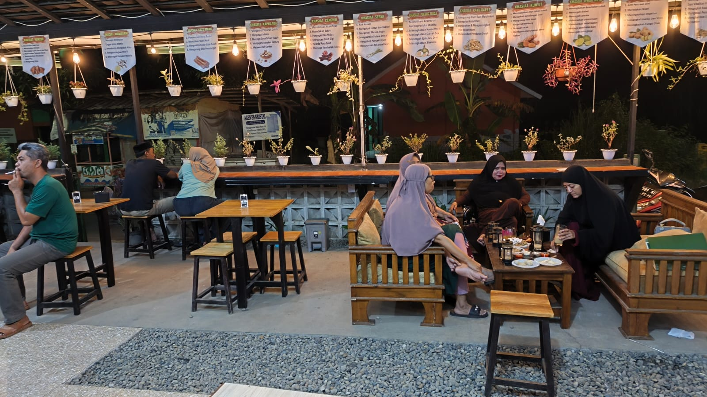
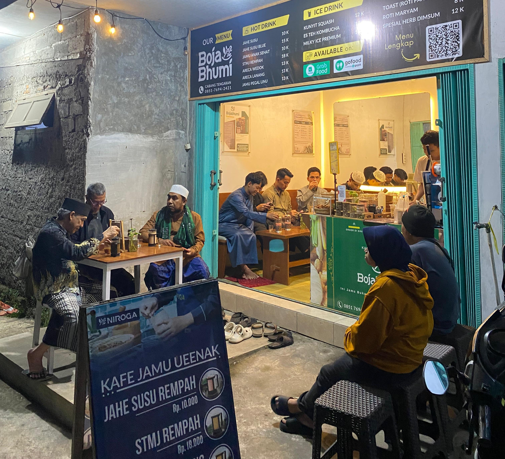

Menyajikan jamu yang enak dan berkualitas
Menghadirkan produk jamu dengan racikan terukur, rasa bersahabat, dan aman dikonsumsi sehingga dapat diterima oleh semua kalangan.
Nikmati setiap tegukan dengan cita rasa autentik, suasana hangat, dan menu pilihan yang menyehatkan.
Dari 500+ pelanggan
dengan rempah pilihan

2012: Awal mula dari Ibu Noviati, pendiri Boja Bhumi. Beliau memiliki cita-cita menjadi dokter, namun karena keterbatasan kondisi, beliau menempuh jalur lain untuk tetap berkhidmat dalam bidang kesehatan melalui ramuan tradisional. Selama puluhan tahun, beliau belajar ilmu kesehatan tradisional baik secara akademis maupun non-akademis. 2012–2022: Berbagai uji coba dan penyempurnaan resep dilakukan. 2022: Resmi berdiri Boja Bhumi Pusat di Lemah Abang, Cirebon. 2022–2024: Dalam waktu 2 tahun berkembang pesat hingga memiliki 6 cabang salah satunya di cirebon
Visi kami“Menghidupkan kembali tradisi jamu sebagai bagian dari gaya hidup sehat masyarakat Indonesia melalui pendekatan edukatif, modern, dan mudah diterima, serta menjadikan Boja Bhumi sebagai pemimpin pasar kafe jamu di Indonesia.”
Misi kamiMenghadirkan produk jamu dengan racikan terukur, rasa bersahabat, dan aman dikonsumsi sehingga dapat diterima oleh semua kalangan.
Memadukan kekayaan warisan herbal Nusantara dengan pendekatan akademis dan ilmiah, sehingga jamu tampil sebagai minuman sehat yang bernilai modern.
Mendorong masyarakat untuk menjadikan jamu sebagai bagian dari gaya hidup sehari-hari, bukan sekadar minuman tradisional sesaat.
Temukan keindahan setiap sudut yang dirancang untuk kenyamanan dan ketenangan Anda.




Ikuti workshop offline yang dirancang untuk memberikan pengalaman belajar yang lebih fokus dan interaktif. Anda tidak hanya mendengar teori, tetapi langsung mempraktikkan materi, berdiskusi, dan mendapatkan insight nyata dari pengalaman di lapangan.
Keuntungan Mengikuti Workshop OfflinePeserta akan dibimbing secara langsung untuk mengenal bahan-bahan alami dan mempraktikkan cara meracik jamu yang benar. Dengan metode praktik langsung, peserta dapat memahami prosesnya secara nyata dan lebih mudah menguasainya.
Workshop ini dirancang untuk memberikan pengalaman belajar yang praktis dan mendalam. Peserta akan dibimbing mengenal berbagai bahan herbal serta mempraktikkan langsung cara meracik lebih dari 33 resep jamu tradisional yang bermanfaat untuk kesehatan sehari-hari.
Setelah mengikuti workshop, peserta tidak hanya mendapatkan pengalaman belajar, tetapi juga keterampilan yang bisa langsung dipraktikkan di rumah. Pengetahuan ini juga dapat menjadi peluang untuk mengembangkan usaha berbasis jamu tradisional.

"Ga bosen-bosen minum jamu disini, baru nemuin ada cafe jamu yang beneran enak dan rasanya ga kayak jamu.. tempatnya cozy, dan enak buat ngobrol, rekomendasi bangett buat nongkrong 🙌."
"Sekali kesini langsung ketagihan dtg lagi Jamu nya enak,harga murah . Tempatnya pun nyaman plus ramah service nya☺️!"
"Good taste of jamu, with good ambient as this is the first time be in cafe jamu. The drink was made manually so its fresh, STMJ oke pisan as it seems a lot of jamu.."
"Natural jamu yg jos khasiatnya stlh seharian beraktifitas plus tempat yg nyaman"
"Jamunya enak gak kaya minum jamu Terapisnya juga ramah buat refleksi dan bekam,suasana adem."
"Pelayanannya super ramah dan cepat. Menu jamunya variatif dan enak."
Temukan keindahan setiap sudut yang dirancang untuk kenyamanan dan ketenangan Anda.
alamat:
JL. Saladara Kel. Karyamulya, Kec. Kesambi, Kota Cirebon, Jawa Barat 45135
Lihat cabangalamat:
Jl. Syech Lemahabang, Lemahabang Wetan, Kec. Lemahabang, Kabupaten Cirebon, Jawa Barat 45183
Lihat cabangalamat:
Jl. Wonosari - Pakis, Tluko, Butuh, Kec. Tengaran, Kabupaten Semarang, Jawa Tengah 50775
Lihat cabang